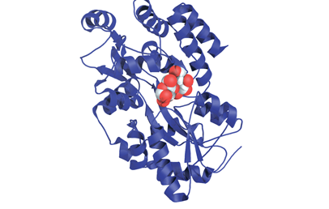
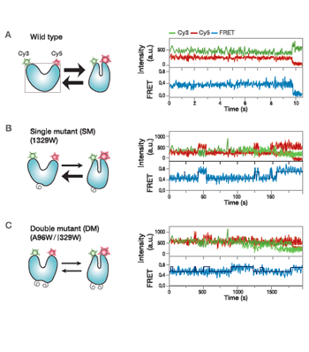
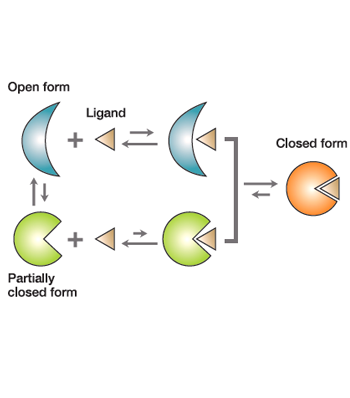

Report by Subjects
Report by Subjects
KAIST RESEARCH ACHIEVEMENTS
Demonstration for how Proteins Recognize Their Cognate Ligands
(Department of Biological Sciences) Hak-Sung Kim
Summary
It will be possible to more accurately demonstrate complex biological phenomena in living organisms and eventually in humans. Furthermore, we can understand how various diseases are caused by the errors in specific ligand recognition by proteins in cells. Through this, we can develop therapeutics with greater efficacy in treating diseases.
R&D Report

Interactions between a protein and a ligand are central to all biological processes including signal transduction, cellular regulation, and enzyme catalysis. Understanding the recognition mechanisms of macromolecules therefore provides fundamental insights into how their biological functions are accurately regulated and controlled. Previous studies have simply relied on the structural differences of before and after the ligand binding, and the molecular recognition mechanism of proteins remains unclear. In this regard, the demonstration of the ligand recognition mechanism by tracking the conformational changes in real-time is urgently needed.
Single-molecule FRET (Forster Resonance Energy Transfer) analysis
In this study, conformational change of MBP (maltose binding protein) was directly tracked at a single molecular level using single-molecule FRET measurements. MBP is known to undergo conformational change between most stable 'open substate' and 'partially closed state' even without a ligand. Through this approach, we could detect the conformational change of MBP in real- time (Fig. 2).
 Fig 2. Real-time analysis of proteins at a single molecular level
Result
Through a kinetic analysis of conformational change, dwell time of a ligand was determined in closed and open states. Our study provided direct evidence that MBP recognizes a ligand through an "induced-fit" mechanism, not the generally proposed selection mechanism for proteins with conformational dynamics. This is the first experimental result that proves the ligand recognition mechanism of a protein through the analysis of the change in the conformational transition at a single molecular level (Fig. 3).
 Fig 3. Schematic demonstration for how proteins recognizes their cognate ligands
Conclusion
Our Results show that the ligands preferentially bind to the open conformation followed by a structural transition of the proteins into a closed form, directly proving the ligand recognition mechanism, which has been the textbook explanation for the past 50 years. The approach presented in this study provides a new paradigm in elucidating the molecular mechanisms by which proteins exhibiting conformational dynamics recognize and bind their cognate ligands, assisting in the design of more potent drugs and even proteins with novel functions.
Expectation Effectiveness
First demonstration of a ligand recognition mechanism of a protein by single molecular FRET measurements. Contributes greatly to the design of more potent drugs and even proteins with novel functions.
Research Funding
ㆍThis study was supported by the Pioneer Research Program for Converging Technology of the Ministry of Science, ICT and Future Planning.
Research Results
ㆍPublished in Nature Chemical Biology (2013)
ㆍNomination of Top 5 among Life Science Research in 2013 in Korea.
ㆍGawal Award (2013)
ㆍSelected as Faculty of 1000 Prime (2013)